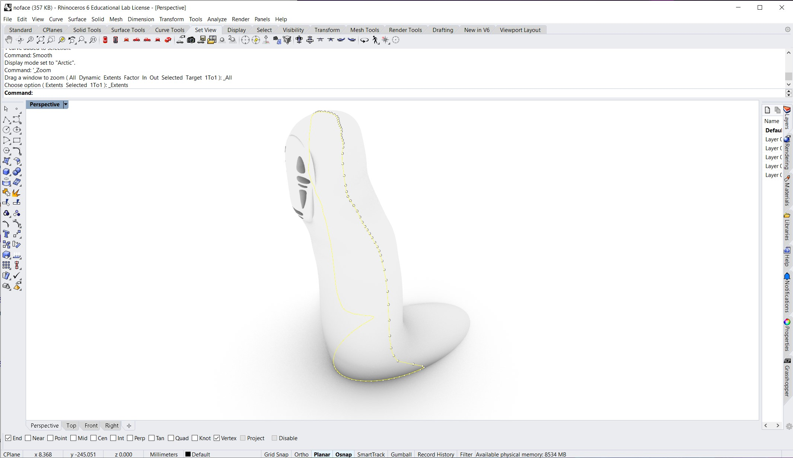
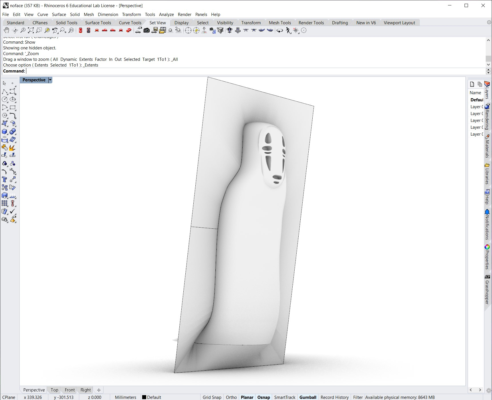

Molding and Casting Part 1
I am creating a mold of Kaonashi, "No-face", from the Studio Ghibli film Spirited Away. I think Kaonashi is a very recognizable character and would make a good mold due to being smooth without many fine features. My plan is to 3D print a mold for the mold, cast silicone into it, and then cast plaster into the silicone mold. I also have some acrylic paints to paint the final figure.
I found a mesh that I liked of Kaonashi on Thingiverse. I tried a few different methods for creating the 3D model of the mold, but I eventually found an instructable published by McNeal/Rhino on using Rhino for two-part molds which was very instructive! First, I learned how to use the silhouette command to extract the visible edge of the model:
After I created a bounding box that would act as the limits of my mold box, I used the two-rail sweep tool to create the mating mold surface. I had to add some of my own slashes to the sweep in order to make it as smooth as possible, but I think it turned out well:
I added keys and a pour spout to the model: